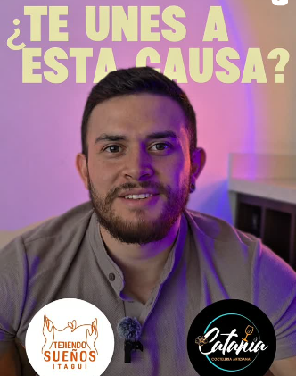
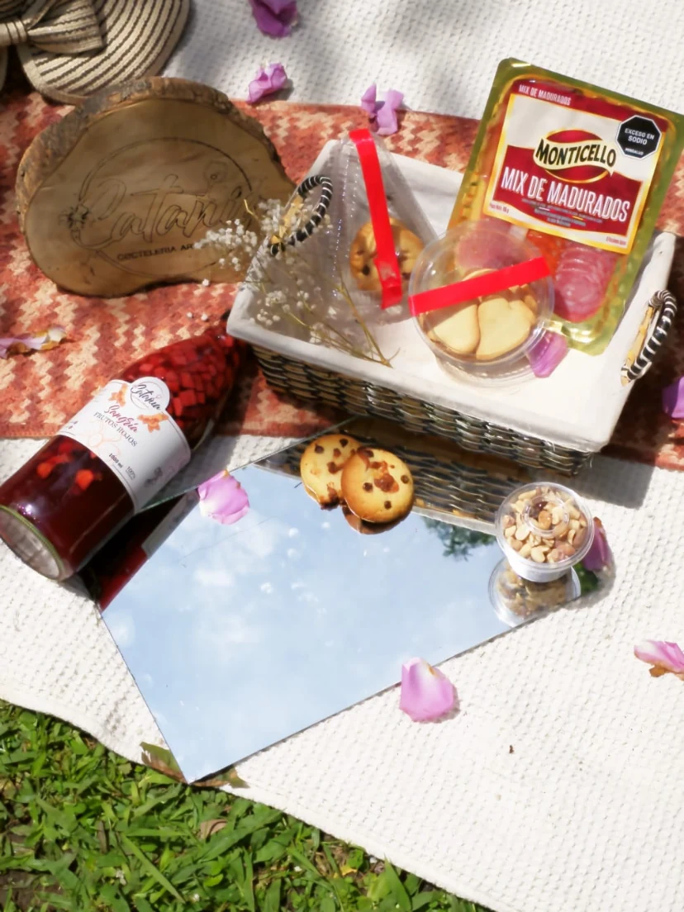

UN UNIVERSO DENTRO DE CADA BOTELLA
Sumérgeteen elmomento.
Siente el color. Sigue las burbujas.
Encuentra el sabor de tu próximo brindis.

Momentos que conectan
01 — LA COLECCIÓN
Elige tu plan.
Nosotros, el sabor.
Sangría con fresas, manzana, uvas e infusión de frutos rojos. Cócteles clásicos y lychee para darle un giro al momento.
También hay sangrías y sodas sin alcohol.
Tu forma de disfrutar. Tu próximo
brindis.

02 — EL RITUAL CATANIA
Lo especial
está en el momento.
No hace falta una gran ocasión.
Una mesa, tu gente y algo rico en la copa.
El
resto viene solo.
Elige tu saborCítrico, frutal o con burbujas.
Dale tu toqueUna copa, hielo y tu fruta favorita.
Quédate un ratoLos buenos momentos no tienen prisa.
03 — TU PRÓXIMO BRINDIS
¿A qué sabe tu plan?
Elige lo que te provoca.
Las cantidades las pones tú.
04 — HAGAMOS QUE PASE
Tu gente.
Un buen brindis.
Transformamos la coctelería artesanal en un boom para tus sentidos. Cuéntanos qué tienes en mente.